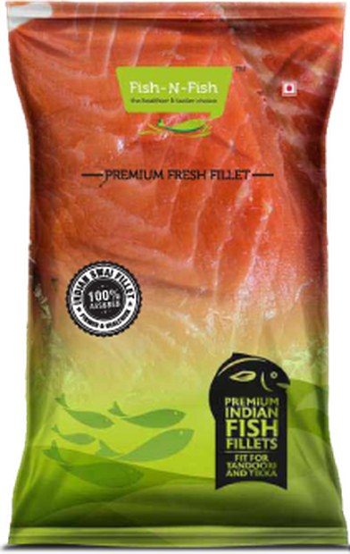
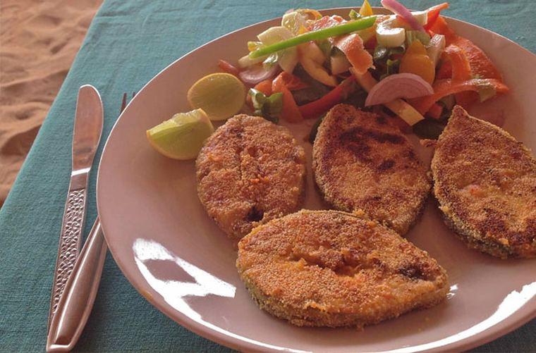

Premium Fresh Fillet

Chilled · boneless
A rich source of omega-3 fatty acids, fish fillets are beneficial for both your heart and brain. This is our top selection: deboned, well-trimmed, and Cryovac® vacuum shrink packed with the fish held between 0 and 4°C throughout.
- Fish
- Basa (Pangasius)
- Bones
- None — deboned & trimmed
- State
- Chilled
- Best for
- Tandoor, tikka, grilling
- Processing
- Held at 0–4°C
- Packing
- Cryovac® vacuum shrink
- Shelf life
- 15 days
- Pack sizes
- On request
Cook with it
Recipes using this cut.

South Indian Fish Fry
Marinated an hour, fried on the tava
Suggested cut — Premium Fresh Fillet
Fish Fillets & Cheese in the Oven
Baked with garlic, spring onion and cheese
Suggested cut — Premium Fresh Fillet
Fish & Chips
Besan-battered, crisp and golden
Suggested cut — Premium Fresh Fillet